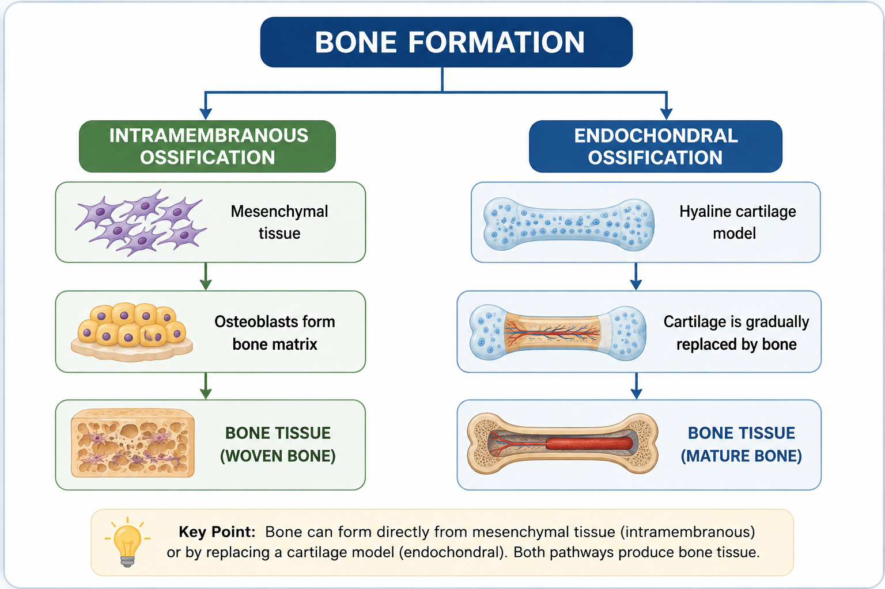
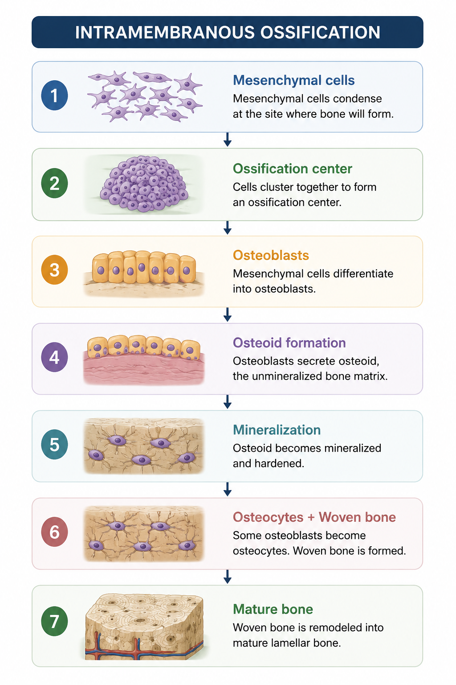
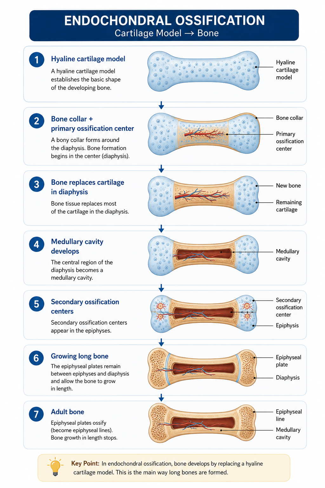
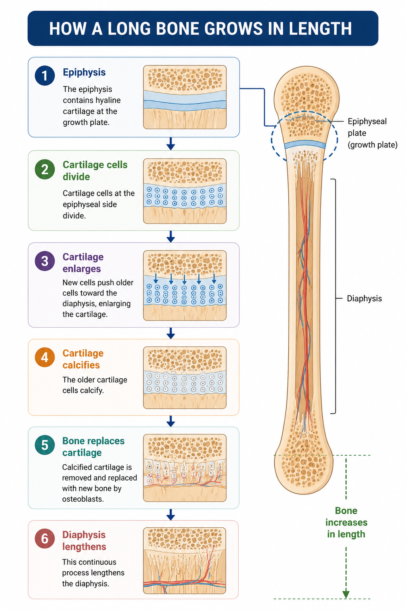
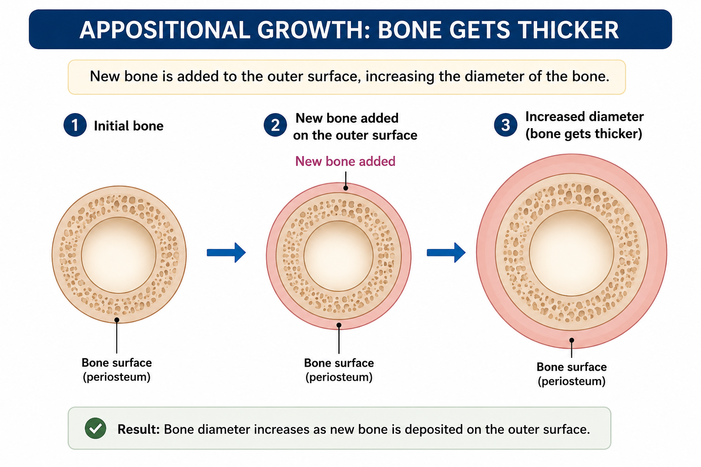

Bone Formation & Growth
Bone formation, also called ossification or osteogenesis, is the process by which bone tissue develops. There are two major pathways of bone formation: intramembranous ossification and endochondral ossification.
Once formed, bones continue to grow and change. Long bones increase in length during growth, while appositional growth increases their thickness.
Two Pathways of Bone Formation
Bone tissue can develop through two major ossification pathways. The starting tissue differs, but both pathways ultimately produce bone.

Two pathways of bone formation: intramembranous and endochondral ossification.
Intramembranous Ossification
In intramembranous ossification, bone develops directly from mesenchymal connective tissue rather than from a cartilage model.

Simplified sequence of intramembranous ossification, from mesenchymal cell condensation to mature bone.
Endochondral Ossification
Bone develops by progressively replacing a hyaline cartilage model, especially during the formation and growth of long bones.

Growth in Length
Long bones increase in length at the epiphyseal plate. Cartilage grows on the epiphyseal side of the plate and is progressively replaced by bone toward the diaphyseal side.

Growth in Thickness
Bones can also increase in diameter through appositional growth. New bone is added to the outer surface while internal bone is remodeled.

Bone Modeling vs Remodeling
Bone modeling changes the shape and size of bone, especially during growth. Bone remodeling continuously removes old bone and replaces it with new bone.
| Feature | Modeling | Remodeling |
|---|---|---|
| Main role | Changes bone shape and size during growth. | Renews and maintains existing bone. |
| Formation | Bone formation can occur in areas different from resorption. | New bone formation follows bone resorption. |
| Importance | Growth and shaping of the skeleton. | Maintenance, repair, and adaptation. |
Bone Remodeling
Bone is a living tissue that continues to change throughout life. Osteoclasts resorb existing bone, while osteoblasts form new bone matrix. Osteocytes remain embedded in bone and help maintain the tissue.
Quick Review
Practice Quiz
Ready to test your understanding? Complete the quiz to reinforce this lesson.